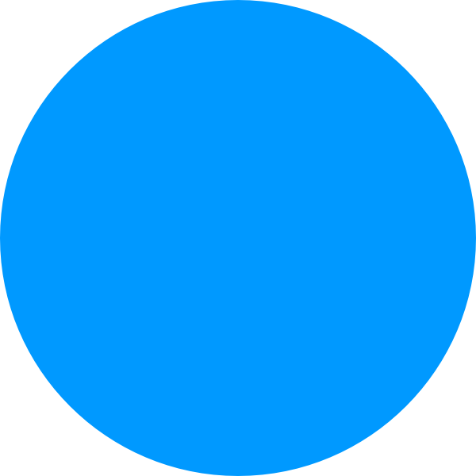

<!DOCTYPE html>
<html>
    <head>
        <!-- Some default setting -->
        <meta charset="utf-8">
        <title></title>
        <meta name="description" content="">
        <meta name="viewport" content="width=device-width, initial-scale=1">

        <!-- Load CSS and pkgs -->
        <script src="js/jspsych.js"></script>
        <script src="js/plugins/jspsych-html-button-response.js"></script>
        <script src="js/plugins/jspsych-instructions.js"></script>
        <script src="js/plugins/jspsych-image-keyboard-response.js"></script>
        <script src="js/plugins/jspsych-html-keyboard-response.js"></script>
        <link href="js/css/jspsych.css"  rel="stylesheet" type="text/css">

        <!-- Load local pkgs -->
        <script src="utils/utils.js"></script>
    </head>
    <body>
        <script>

            // -----------------------------
            //            Welcome    
            // -----------------------------
            var welcomeScreen = {
                type: 'html-button-response',
                stimulus: 'Welcome to our experiment',
                choices: ['Click here to start'],
            };

            // ------------------------------
            //         Instruction    
            // ------------------------------
            var instructScreen = {
                type: 'instructions',
                pages: [
                    "<p> In this experiment, a circle will appear in the middle of the screen. </p>"+ 
                    "<p> If the color is <b>Blue</b>, press \"F\". </p>" +
                    "<p> If the color is <b>Red</b>, press \"J\".  </p>" +
                    "<div style='float: left'>"+
                    "<p>Press the key \"F\" </p></div>"+
                    "<div style='float: right'>"+
                    "<p>Press the key \"J\" </p></div>",
                    'Let\'s start some pratice first',    
                ],
                data:{
                    screen_id: 'instruct'
                },
            };

            // ------------------------------
            //            Trials   
            // ------------------------------
            /*Fixation*/ 
            var fixationScreen = {
                type: "html-keyboard-response",
                stimulus: "<div style='font-size: 100px'><b>+</b></div>",
                choices: jsPsych.NO_KEYS,
                trial_duration: 1000,
            };

            /*Response Screen*/ 
            var responseScreen = {
                type: "image-keyboard-response",
                stimulus: jsPsych.timelineVariable("stimulus"),
                data: jsPsych.timelineVariable("data"),
                stimulus_height: 350,
                stimulus_width:  350,
                choices: ['j', 'f'],
                trial_duration: null,
                on_finish: function(data){
                    // calculate if the response is correct
                    if (data.response == data.corAct){
                        data.acc = 1 
                    }else{
                        data.acc = 0 
                    }
                }
            };

            /*Feedback Screen*/ 
            var feedbackScreen = {
                data: {screen_id: "feedback"},
                type: "html-keyboard-response",
                stimulus: function(){
                    // obtain data from the previous trial
                    // to read the jsPsych data we use get 
                    // there is many data and we get the last trials
                    // there is a lost of operation we can do for last trial
                    // we choose to directly read the value
                    // [0] is the data in the jsPsych screen. 
                    var lastAcc = jsPsych.data.get().last(1).values()[0].acc;
                    if (lastAcc == 1){
                        return "<div style='font-size: 60px'>Correct<\div>"
                    }else{
                        return "<div style='font-size: 60px'>Incorrect<\div>"
                    }
                },
                choices: jsPsych.NO_KEYS,
                trial_duration: 500,
            };
            
            /*A Block*/
            var stimSpace = [
                {
                stimulus: "img/blue.png", 
                data: {screen_id: "blue trial",
                corAct: 'j'}
                },
                {
                stimulus: "img/Red.png", 
                data: {screen_id: "red trial",
                corAct: 'f'}
                },
            ]
            var trialTimeline = {
                timeline: [fixationScreen, responseScreen, feedbackScreen],
                timeline_variables: stimSpace,
                randomize_order: true, 
                repetitions: 5,
            };

            // ------------------------------
            //        The whole task   
            // ------------------------------
            var taskTimeline = [];
            taskTimeline.push(
                welcomeScreen, 
                trialTimeline,
            );
            var aTask = {
                timeline: taskTimeline,
                on_finish: function(){
                    var csv = jsPsych.data.get().csv();
                    var filename = 'SRT_task.csv'
                    downloadCSV(csv, filename);
                    jsPsych.data.displayData()
                }
            };

            // -------------------------------
            //      Run the experiment
            // ------------------------------- 
            jsPsych.init(aTask)

        </script>
    </body>
</html>